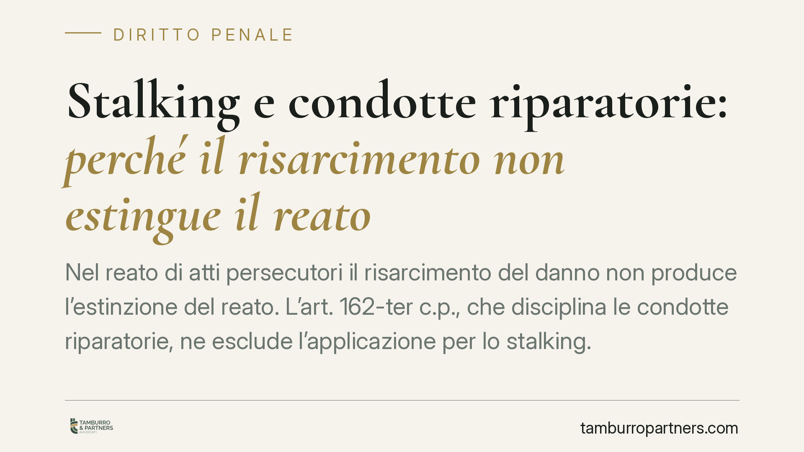

Stalking e condotte riparatorie: perché il risarcimento non estingue il reato
Nel reato di atti persecutori il risarcimento del danno non produce l'estinzione del reato. L'art. 162-ter c.p., che disciplina le condotte riparatorie, ne esclude l'applicazione per lo stalking. La questione conserva rilievo pratico: incide su querela, attenuanti e sede civile. Vediamo perché la distinzione tra riparazione ed estinzione è decisiva per chi affronta un procedimento, dai due lati.

Il quadro normativo
L'art. 162-ter del codice penale prevede che, per i reati procedibili a querela soggetta a remissione, il giudice dichiari estinto il reato quando l'imputato, prima della dichiarazione di apertura del dibattimento di primo grado, abbia riparato interamente il danno mediante restituzioni o risarcimento ed abbia eliminato, ove possibile, le conseguenze dannose o pericolose del reato.
Il comma 4 del medesimo articolo introduce però un'eccezione espressa: il meccanismo non si applica ai casi di cui all'art. 612-bis c.p., ossia agli atti persecutori. Si tratta di una scelta del legislatore, non di una lacuna interpretativa. Lo stalking resta quindi fuori dal perimetro delle condotte riparatorie estintive.
La ratio è coerente con la natura del reato. Gli atti persecutori sono un reato abituale, che si consuma attraverso una reiterazione di condotte capaci di generare un perdurante stato d'ansia o di paura, ovvero il timore per l'incolumità propria o di persone care, ovvero ancora una alterazione delle abitudini di vita. La relazione tra autore e vittima è tipicamente asimmetrica. Ammettere l'estinzione tramite risarcimento avrebbe esposto la persona offesa al rischio di monetizzazione della sofferenza e a possibili pressioni economiche finalizzate a chiudere il procedimento.
Remissione di querela e condotte riparatorie: due istituti diversi
È essenziale non confondere due piani distinti.
Le condotte riparatorie dell'art. 162-ter c.p. producono l'estinzione del reato per iniziativa dell'imputato, a prescindere dalla volontà della persona offesa. Questo istituto, come detto, non opera per lo stalking.
La remissione di querela è invece un atto della persona offesa. Per gli atti persecutori la procedibilità è, di regola, a querela della persona offesa, e tale querela è in linea di principio rimettibile. Occorre però tenere conto del comma 4 dell'art. 612-bis c.p.: la querela diventa irrevocabile quando il fatto è stato commesso mediante minacce reiterate nei modi previsti dall'art. 612, comma 2, c.p. (ipotesi aggravate). La procedibilità d'ufficio è invece prevista in ulteriori casi specifici indicati dalla norma, tra cui quello in cui la persona offesa sia minore o disabile, o quando il fatto sia connesso ad altro delitto procedibile d'ufficio.
In sintesi: una cosa è la possibilità di rimettere la querela (che dipende dalla vittima e non è sempre ammessa), altra cosa è l'estinzione tramite risarcimento (che non è mai ammessa per lo stalking).
Cosa cambia in concreto
Esclusa la via estintiva, il risarcimento del danno conserva comunque una triplice rilevanza.
Sul piano delle attenuanti. Il risarcimento integrale prima del giudizio può fondare la circostanza attenuante di cui all'art. 62, n. 6, c.p., con effetti concreti sulla determinazione della pena.
Sul piano del trattamento sanzionatorio. La riparazione può essere valutata dal giudice ai fini della commisurazione della pena ex art. 133 c.p. e può incidere sulla concessione di benefici o di misure alternative.
Sul piano civile. Il risarcimento definisce, in tutto o in parte, la pretesa risarcitoria della persona offesa costituitasi parte civile, o comunque riduce l'oggetto del successivo giudizio civile.
Per l'imputato, ciò significa che risarcire non chiude il procedimento penale ma può migliorare in modo apprezzabile la propria posizione. Per la persona offesa, significa che accettare un ristoro economico non comporta rinuncia alla tutela penale, salvo che non decida, ove ammesso, di rimettere la querela.
Cosa fare in concreto
- Verificare la procedibilità. Accertare fin dall'inizio se il caso ricada tra le ipotesi di irrevocabilità della querela o di procedibilità d'ufficio previste dall'art. 612-bis, comma 4, c.p.
- Distinguere gli istituti. Non impostare la difesa sull'aspettativa di un'estinzione per condotta riparatoria: per lo stalking non è prevista.
- Documentare la riparazione. Se si procede al risarcimento, formalizzarlo con quietanze e prove di pagamento utili a far valere l'attenuante prima dell'apertura del dibattimento.
- Segnalare al proprio legale ogni contatto. Per la persona offesa è opportuno riferire al proprio difensore eventuali proposte transattive o pressioni, così da valutarne le implicazioni processuali.
- Valutare la costituzione di parte civile. Ponderare tempi e strategia della domanda risarcitoria in sede penale rispetto all'azione civile autonoma.
Un punto fermo
La linea è netta: per gli atti persecutori il risarcimento non compra l'impunità. Può alleggerire la pena e definire il profilo civilistico, ma il reato resta perseguibile. È una scelta che protegge la vittima dalla trasformazione della tutela penale in una trattativa economica.
Ogni condominio ha una storia a sé.
Se gestisci un'amministrazione e vuoi un confronto su una specifica questione condominiale, scrivi allo studio. Ti rispondiamo entro un giorno lavorativo.